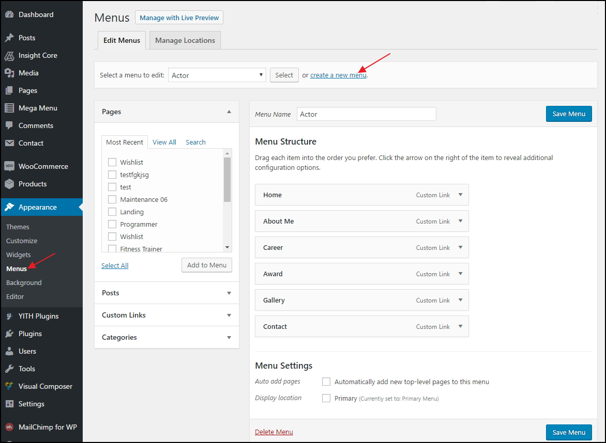
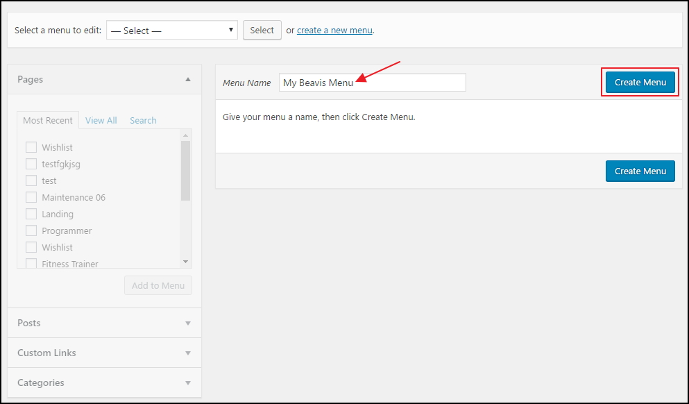
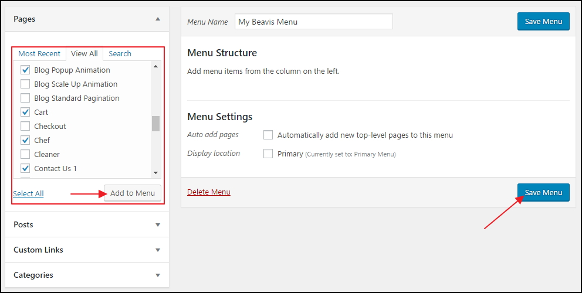
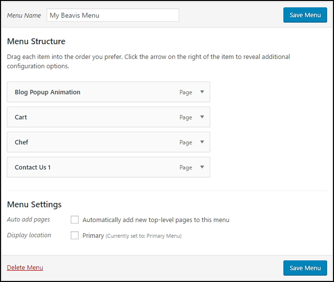

Step 1: Navigate to Apperance > Menus in your admin sidebar and click Create a new menu option.

Step 2: Give your menu a name, then hit Create Menu.

Step 3: Choose menu items you want to add from the left and hit Add to Menu.
Then hit Save Menu

Your new menu has been created:
